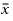

Under these circumstances, the variation in all variables should be assessed and if small enough, then a considered judgment should be made that the solution is effectively converged.
In many situations encountered in electronics, there may well be a natural instability in the flow field that can manifest itself in a low-level oscillation profile. The monitor points under these circumstances can be used for making assessment of the level of instability involved.
To use the Monitor Point Convergence for Temperature option effectively, you must make sure that monitor points are placed at every point where the temperature is required to be monitored for convergence.
Convergence is achieved when:
(standard_deviation × 3) < required_accuracy
where:
required_accuracy is specified in the Solver Control Tab, default 0.5 degC.
where:
xi is the temperature at the ith iteration.
 is the mean temperature for the total number of iterations.
N is the total Number of Iterations, as specified in the Solver Control Tab, default 30.
By adjusting the Required Accuracy and the Number of Iterations (sample size), the moment the monitor point is judged to be converged can be changed.
If the temperature is converging, Figure 1 illustrates the moment of accepted convergence.
If the temperature is changing by a constant amount, the acceptable gradient is defined by the Number of Iterations and the Required Accuracy as shown in Figure 2.